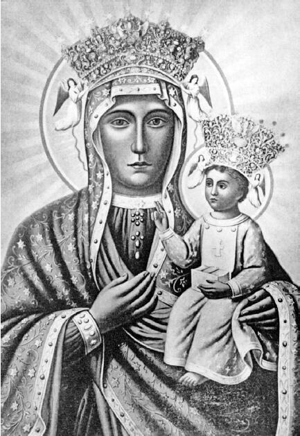

人们趋向于用宗教来规划自己生存的目的，理解自己所属社会和其他社会的关系，也以此构想自身及社会在已知宇宙秩序中的位置。然而，如果此时人们信仰的是一神教，民族和宗教的关系就会变得很复杂。这是因为相信一个万能的神是对人类的共性而非民族差异的肯定。
古代以色列人和犹太人对万能上帝的信仰显然由“被选中的民族”和“应许的土地”这两个概念支撑。这两个概念赋予人类两个生存目的：
（1）以注重生存为基础的民族的持续发展（据《申命记》30：19—20记载，“选择生活，让你和你的孩子们能在这片土地上生存”）；
（2）肯定一种普世的合理生活方式也是一神教信仰的目标。
一神教的这一标准在概念上不需要特别清晰。例如，从波兰和斯里兰卡各自历史的角度看，具有一神教性质的罗马天主教和佛教同样证明了一神教与民族发展之间的相互关系。而且，今天僧伽罗的佛教徒还把“四大天王”供奉为民族的保护神。
而考虑其他例证则可以让一神教和民族的复杂关系更加清晰。东正教传统认为，公元6世纪和7世纪早期阿瓦尔人和波斯人包围君士坦丁堡时，圣母马利亚在事先安放她寿衣的布雷契耐教堂外与保卫城池的战士们并肩作战，于是就有了马利亚——希腊语称Theotokos，即“生育上帝的她”——是君士坦丁堡的守护女神这一说法。波兰传统认为，1655年圣母马利亚出现在琴斯托霍瓦修道院的高墙上，打败了进攻波兰的瑞典侵略者。因此，人们相信马利亚是捍卫波兰领土统一的女神。
还有许多例子说明神或女神被视为民族领地的保护神。最著名的就是古代雅典的恩人和守护者雅典娜女神。当然，古希腊宗教信奉的是众神。可是，人们相信超凡的马利亚在琴斯托霍瓦的作为，相信僧伽罗神话传说中的佛陀，这些都证明了一神教为稳固和延续俗世中领地的存在所作的贡献。这种贡献是否应该理解为一神教中的众神因素？归根结底，为什么“上帝的母亲”偏向保护波兰，而雅典娜偏向保护雅典呢？
让我们再从另一个不同的角度考虑民族引发的关于一神教的复杂情况。许多国家都有“无名战士墓”，用以纪念捍卫民族的关键历史时刻和英勇事迹。例如英国伦敦的威斯敏斯特大教堂、法国巴黎的凯旋门、美国华盛顿哥伦比亚特区附近的阿灵顿国家公墓。这些墓地是领地内无名先辈和民族英雄的纪念地，他们在保卫自己民族的战争中献出了生命，所以人们认为他们值得敬重。

图12 琴斯托霍瓦的圣母马利亚（“黑圣母”）。1717年，波兰国王宣称马利亚为波兰女王
在一神教文明中，“无名战士墓”纪念的为国捐躯的战士并不是作为神来供人祈祷的。这些战士是俗世中人，可供人祈祷的圣母马利亚则是神界的力量。这两者的区别很重要，因为神性的马利亚把我们带入了宗教概念的世界。但是，“无名战士墓”的宗教光环又使这一区别变得模糊。
一神教想象的客体超越了俗世，或者说它是超自然的存在——如天堂、涅槃或世界末日，或者是超自然的力量。民族中当然也有想象的成分，如时间上历史和现在的连续，以及领地内覆盖面很广的亲属关系，这两者都超出了任何具体个人的亲身经历。然而，这种超越的对象，即以领地为依托的民族共同体，则属于俗世。我们已经看过这样的例子，它们说明了历史上一神教共同体如何模糊了神界和俗世之间的界限，又如何反让自己融入俗世中的领地关系。我们现在正要转向这样的融入，也会涉及英雄之墓。